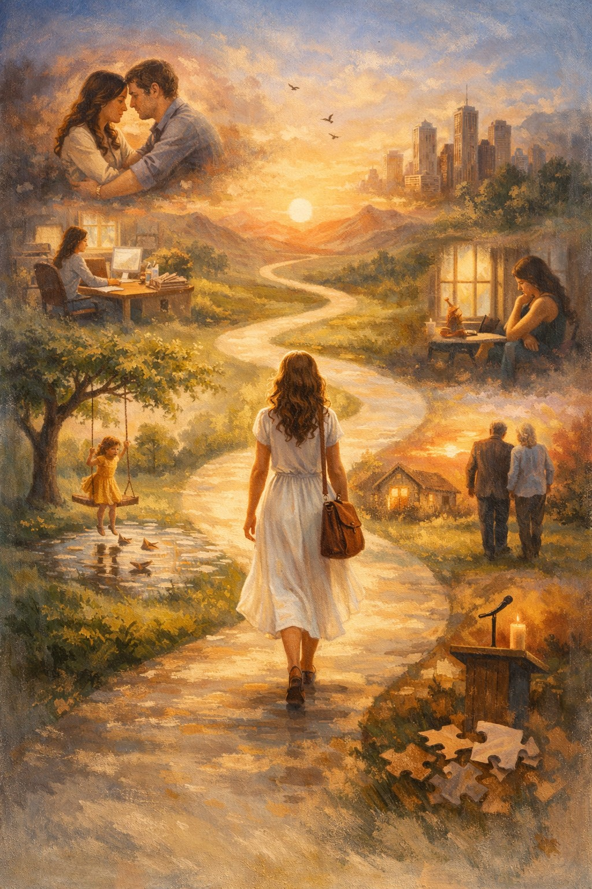

שיר על תחנות החיים, על רגעים שמעצבים אותנו, על כאב שמלמד, על אהבה שמרפאה, ועל מסע שהופך אותנו לשלמים.
חיי
הן תחנות,
כל אחת
היא מי שאני היום.
הילדות,
ריח של גשם ראשון,
צחוק שלא ידע פחד,
עולם קטן המלמד חופש גדול.
מקצוע,
צעדים ראשונים בעולם חדש,
ללמוד כללים, להבין אנשים,
להרגיש אחריות.
שם גדלתי לעצמי.
אהבה ראשונה,
לב דופק מהר מדי,
לחש של מילים,
ציפייה דרוכה לבאות,
וכאב שמגדל.
התפתחות מקצועית,
תפקיד מאתגר,
משימות מחזקות,
הצלחות קטנות,
ביטחון שגדל.
אובדן,
שולחן ריק, קול שנעלם,
געגוע שלא מוצא מנוחה,
ולהמשיך.
לגלות את כוח החיים.
משבר מקצועי,
מקום שלא התאים יותר,
שאלות על הדרך ועל הערך,
הבנה שצריך לבחור מחדש.
להתוודות לאומץ לשנות.
אומץ,
לעזוב מקום כדי לגדול,
לצאת מאזור נוחות,
לגדל כוח פנימי.
לבחור בי.
פריצה מקצועית,
תפקיד שמרגיש נכון,
עשייה מדליקה,
אנשים המאמינים בי.
שם גדלתי באמת.
אהבת אמת,
יד חמה מחזיקה הבטחה,
בית שנבנה יחד,
לב המרגיש משפחה,
ושקט טוב שממלא את הבית.
אהבת המקצוע,
היום שבו הבנתי
שזה לא רק עבודה,
זה חלק ממי שאני.
בית שנבנה מהעשייה.
יש בי פאות רבות,
פאה של רגש ופאה של עשייה,
פאה של פחד ופאה של אומץ,
פאה של עבר ופאה של הווה.
הצלע
היא המקום הדק שבו הן נפגשות,
המקום שבו חלקים שונים בי
לומדים לדבר זה עם זה,
להתחבר, להתאזן,
ולהפוך אותי לשלמה.
מסע חיי
הוא רצף תחנות,
היעד הוא הדרך עצמה.
כולן יחד
הם אני.